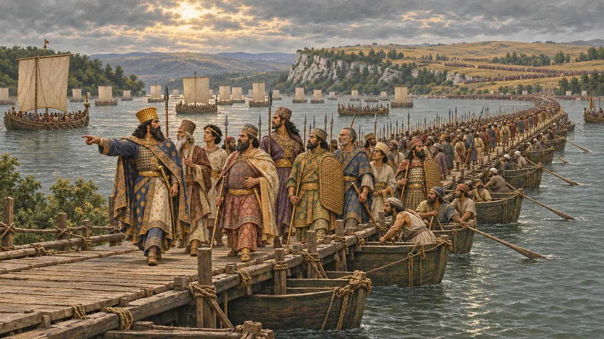
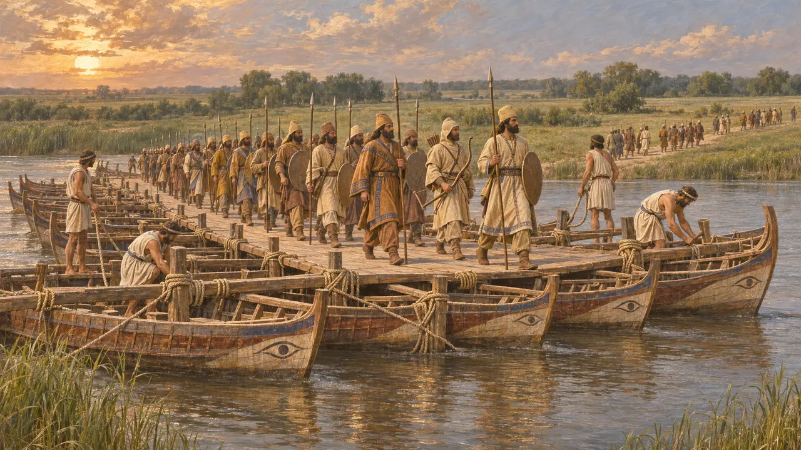
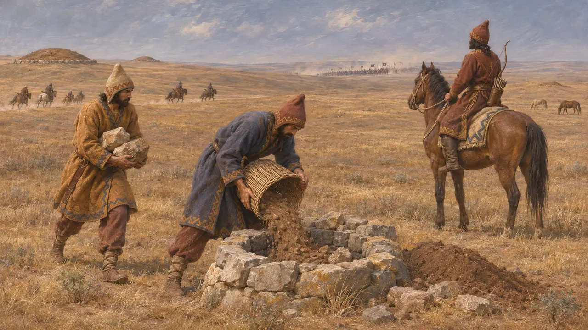
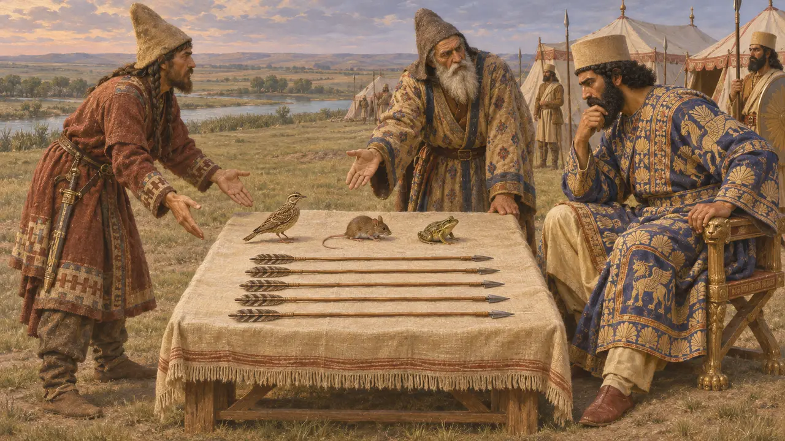
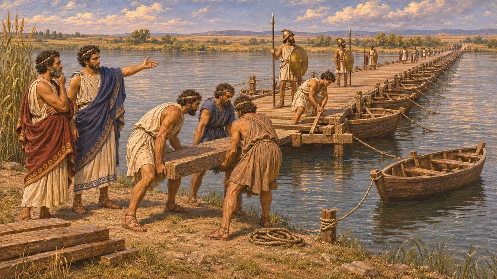
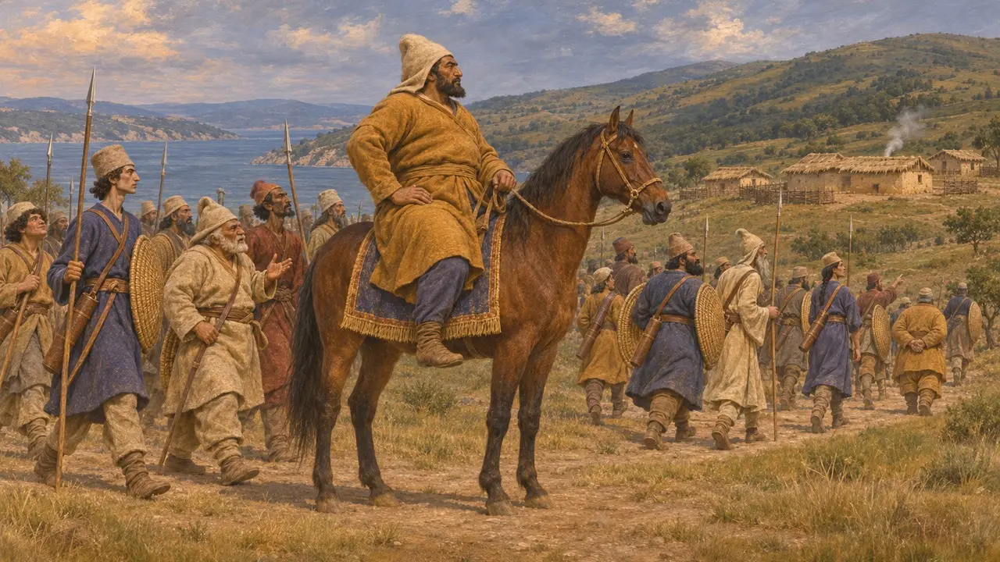

Encyclopédie › Batailles et événements

La campagne scythe de Darius
La marche de Darius à travers le Bosphore et l'Istros contre les Scythes, vers 513 av. J.-C.
Dans le jeu : Niveau 6 : Le Pont de bateaux
Vers 513 av. J.-C., Darius mena une armée hors d'Asie, à travers le Bosphore et l'Istros, jusque dans la steppe au nord de la mer Noire. Les Scythes refusèrent le combat et usèrent son armée, et il revint sans avoir remporté de victoire. La campagne laissa pourtant à la Perse un pied en Europe, en Thrace et le long de l'Hellespont.
Dans le jeu : Le niveau de l'Istros est construit autour de la campagne : les Scythes brûlent l'herbe, comblent les puits, envoient un oiseau, une souris, une grenouille et cinq flèches, et refusent le combat. Le jeu attribue la Thrace à Darius ; Hérodote en donne une grande partie à Mégabaze.

La marche vers l'Istros
Récit antiqueHérodote raconte que Darius traversa le Bosphore sur un pont de bateaux construit par Mandroclès de Samos, tandis que la flotte ionienne remontait la mer Noire jusqu'à l'embouchure de l'Istros. Il compte 700 000 hommes et 600 navires, des chiffres que les historiens modernes jugent beaucoup trop élevés. Pendant la marche à travers la Thrace, les Gètes résistèrent et furent soumis. À l'Istros, les Ioniens firent un pont avec leurs navires, et l'armée passa en terre scythe.
Herodotus 4.83-98

Une guerre sans bataille
Récit antiqueHérodote raconte que les Scythes, dont les rois comptaient Idanthyrsos, choisirent de ne pas affronter les Perses en bataille rangée. Ils se replièrent devant l'armée, comblèrent les puits et les sources, dépouillèrent les pâturages et harcelèrent les fourrageurs perses avec leurs cavaliers. Quand Darius somma Idanthyrsos de combattre ou de se soumettre, le roi répondit que les Scythes n'avaient ni villes ni champs ensemencés à perdre et qu'ils ne combattraient que si l'on touchait aux tombeaux de leurs pères.
Herodotus 4.120-128

L'oiseau, la souris, la grenouille et les flèches
Légende tardiveLes Scythes envoyèrent alors à Darius un oiseau, une souris, une grenouille et cinq flèches. Dans le récit d'Hérodote, Darius y vit l'offre de la terre et de l'eau, mais Gobryas l'avertit qu'à moins de voler comme des oiseaux, de se cacher sous terre comme des souris ou de bondir dans les lacs comme des grenouilles, les Perses ne rentreraient jamais chez eux. Hérodote a mis l'histoire par écrit quelque quatre-vingts ans plus tard. Elle a la forme d'un récit d'énigme, et aucune source perse ne la mentionne.
Herodotus 4.131-132

Les Ioniens et le pont
ContestéHérodote raconte que les Ioniens furent laissés pour garder le pont pendant soixante jours. Miltiade d'Athènes, alors maître de la Chersonèse, les pressa de le rompre pour piéger le Roi, mais Histiée de Milet fit valoir que les tyrans devaient leur pouvoir à la Perse. Les Ioniens ne démontèrent que l'extrémité nord pour tromper les Scythes et conservèrent le passage pour la retraite. Beaucoup d'historiens doutent du rôle de Miltiade et pensent qu'il est né de son besoin ultérieur de justifier son service auprès de la Perse.
Herodotus 4.136-142

Buts, itinéraire et résultats
ContestéHérodote présente la campagne comme une vengeance pour un ancien raid scythe en Médie, mais les historiens débattent encore de ses buts et de sa date exacte. Son récit d'une marche au-delà du Tanaïs est largement mis en doute. Les inscriptions de Darius ne décrivent aucune guerre de ce genre, bien que la liste de Naqsh-e Rostam nomme des Sakas d'au-delà de la mer, peut-être les Scythes d'Europe. Mégabaze, laissé en Europe avec des troupes, soumit ensuite une grande partie de la Thrace et de la région de l'Hellespont.
Herodotus 4.1; 4.122-124; 4.143-144; 5.1-2; DNa
Sources
- Herodotus, Histories 4.1; 4.83-144
- Herodotus, Histories 5.1-2
- DNa
- P. Briant, From Cyrus to Alexander, 2002
- A. Kuhrt, The Persian Empire: A Corpus of Sources from the Achaemenid Period, 2007